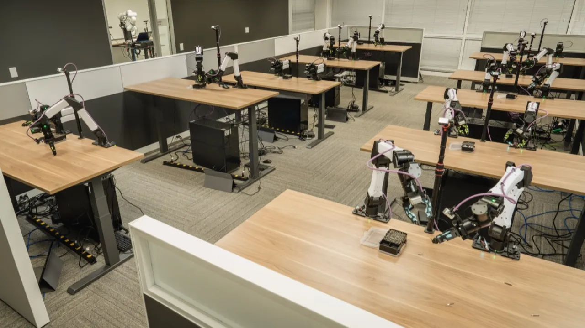
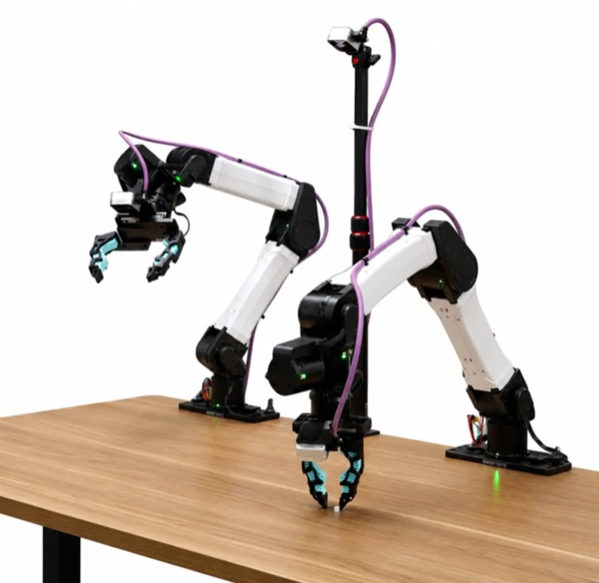
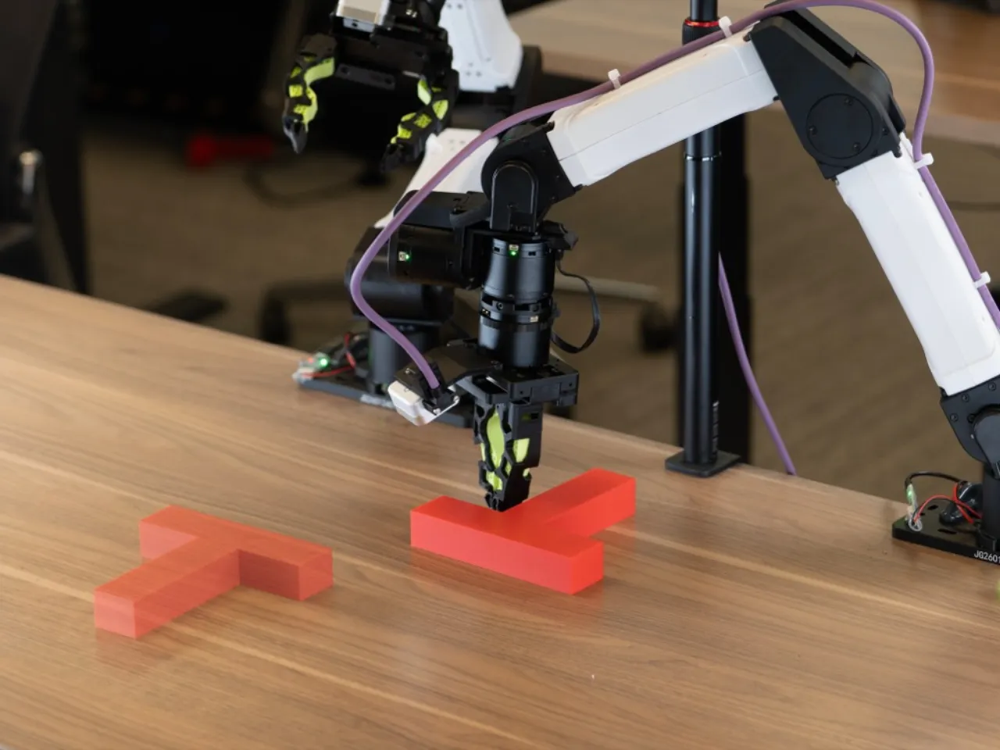
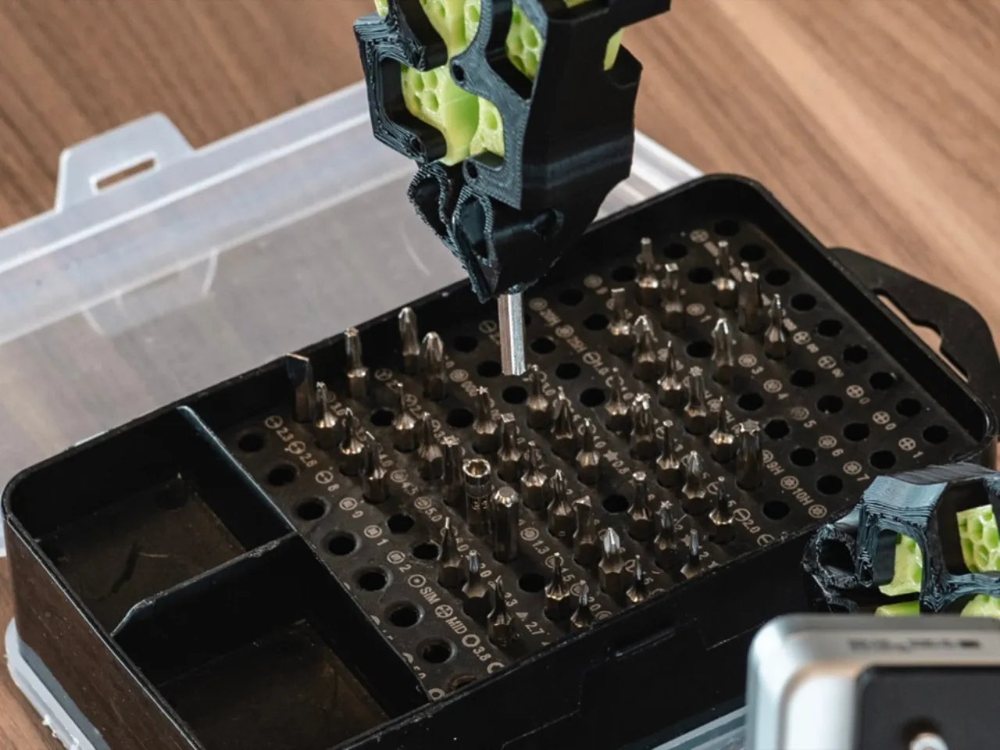
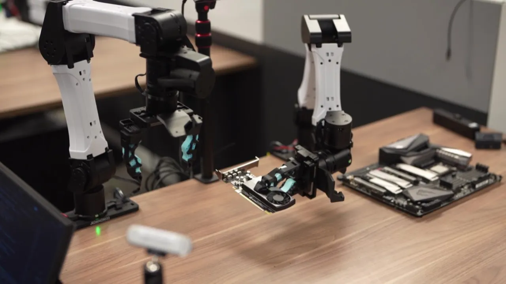
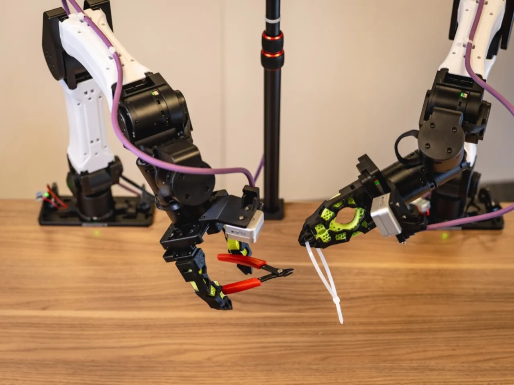

ENPIRE 是一个面向编程智能体（coding agent）的框架，通过"物理反馈闭环"让前沿代码智能体自主迭代机器人策略——无需人工监督，在真实世界灵巧操作任务（Push-T、插针、GPU 插拔、切扎带）上达到 99% pass@8 成功率。
实现真实世界的灵巧机器人操作，长期依赖大量人工监督与算法工程投入，这是通向"通用物理智能"（general physical intelligence）的核心瓶颈。如果前沿编程智能体能够在机器人上自主运行实验、分析失败、改进策略，这一循环即可在无人介入的情况下持续推进。
"Achieving dexterous robotic manipulation in the real world relies heavily on human supervision and algorithmic engineering, which is a central bottleneck in the pursuit of general physical intelligence."

ENPIRE 将"物理反馈"结构化为四个可调用模块，让编程智能体把机器人硬件当作实验基础设施来使用：生成策略代码、在真实机器人上执行 rollout、读取失败日志、查阅文献、修订代码——循环直到任务成功。

"Construct reset, safety, verification, and logging interfaces the agent can call." 实现自动复位（auto reset）与自动评估（auto evaluation），保证每次 trial 从已知的随机初始状态出发，且结果可量化记录。
"Generate and revise policy code from rewards, videos, traces, and failure cases." 支持多种 PI 范式：启发式学习（heuristic learning）、工具调用（tool calling）、行为克隆（BC）、离线 RL、在线 RL。
"Run budgeted robot trials and preserve the state, action, video, and result for audit." 支持单机器人或多机器人并行执行，保存状态、动作、视频和结果供后续分析。
"Compare branches, reuse successful recipes, and prune hypotheses that fail on hardware." 代码智能体读取日志、查阅文献，改进训练基础设施和算法代码以应对失败模式。
以"切扎带"任务为例，系统使用自动研究推导出的奖励函数对结果打分：检测器在扎带头和扎带条上画出 bounding box，分割模型（SAM 3）对原始视图进行像素级分割，每个摄像头视角独立判断扎带条是否通过扎带头（超过固定长度阈值）。全程无需人工判断。
每项任务设计了专用的自动复位流程，使机器人在无人干预的情况下将场景恢复到随机初始状态：
ENPIRE 支持 1、4、8 个智能体团队并行操控多台机器人，论文引入两个新指标量化资源效率：
实验分为三部分：（1）真实世界灵巧操作任务的端到端成功率；（2）AutoEnvBench 对三个主流编程智能体的横向对比；（3）机队规模扩展实验与仿真环境评测（RoboCasa）。
论文定义："pass@8 is not best-of-8 i.i.d. samples on the task. Within a single long-horizon rollout, the agentic loop gets up to 8 in-context retries per subtask, each conditioned on the previous failures — so it measures emergent retry and recovery, not sampling luck."
"Policies trained with ENPIRE reach a 99% pass@8 success rate across the showcased manipulation tasks."




论文评测了三个前沿编程智能体在 Push-T 和 Pin Insertion 两项任务上的自主研究进展（随 wall-clock 时间跟踪成功率）：
| Coding Agent | 底层模型 | 评测任务 |
|---|---|---|
| Codex | GPT-5.5 | Push-T, Pin Insertion |
| Claude Code | Opus 4.7 | Push-T, Pin Insertion |
| Kimi Code | Kimi K2.6 | Push-T, Pin Insertion |
注：项目页面未公布各 agent 的具体数值比较表格；论文追踪的是随时间变化的成功率曲线而非单一汇总数字。如需精确数字，请参阅原始论文。
项目页面展示了"ideation timeline"——代码智能体在 Push-T 上自主探索的策略改进节点，例如：
典型提示词（prompt）示例："Write a heuristic policy, with no neural network training, to achieve a 100% success rate in the Push-T environment over at least 50 continuous episodes. You are not allowed to modify environment code; that is cheating. No cheating. Fan out a subagent team to try approaches."
ENPIRE 同时在 RoboCasa 仿真环境中评测了以下任务的策略自动生成能力：Coffee Setup Mug、Open Cabinet、Open Drawer、Open Stand Mixer、Counter to Cabinet、Sink to Counter、Turn Off Stove、Turn On Sink。
"Coding agents do not fully utilize robot resources when they are reading logs, writing code, debugging, or waiting for the language-model backbone. As the number of robots scales, MRU decreases while GPU active utilization increases. Compared to a single-robot setup, agent teams spend more time summarizing peer branches and less time operating the robot, and coding agents may fail to launch enough parallel training sessions to exhaust GPU resources."
"Scaling the robot fleet drives higher token consumption: as more agents read logs, summarize peer branches, and coordinate, the total token budget required to reach a successful policy grows with fleet size. Larger fleets can reach success sooner, but the additional speedup comes at the cost of higher token consumption."